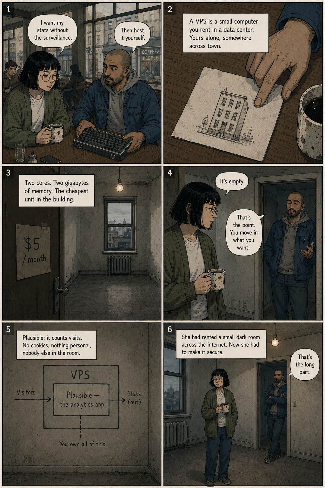
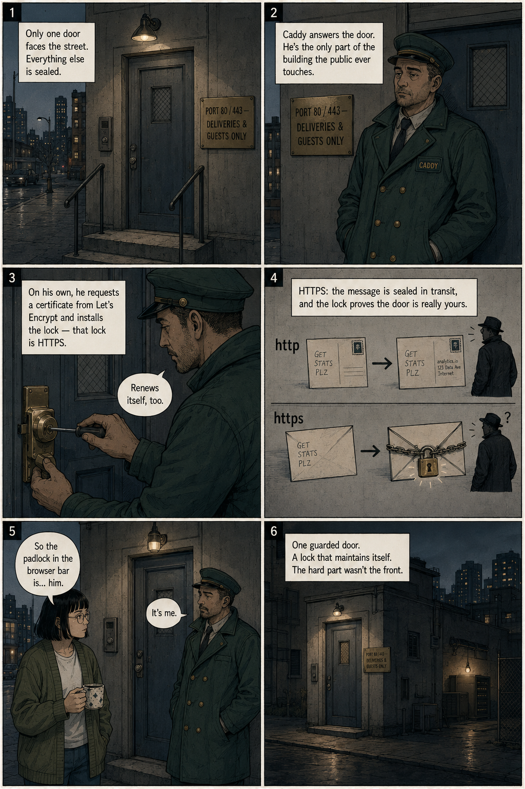
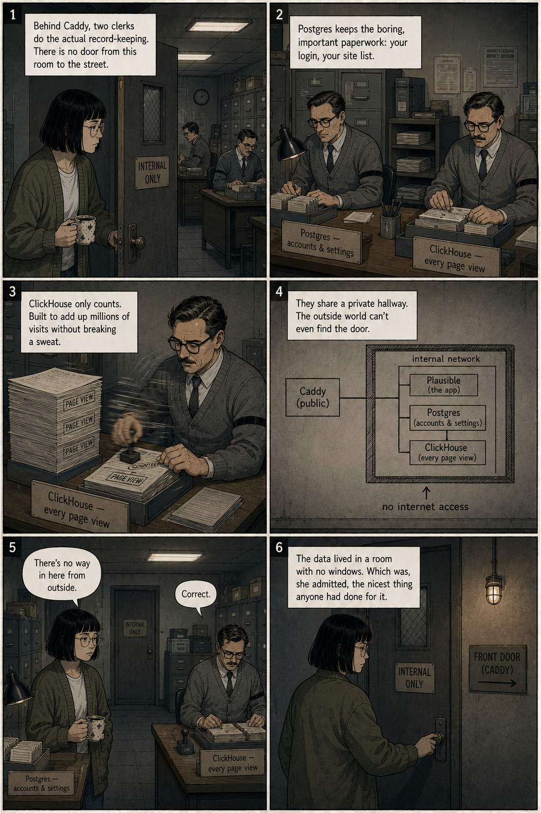
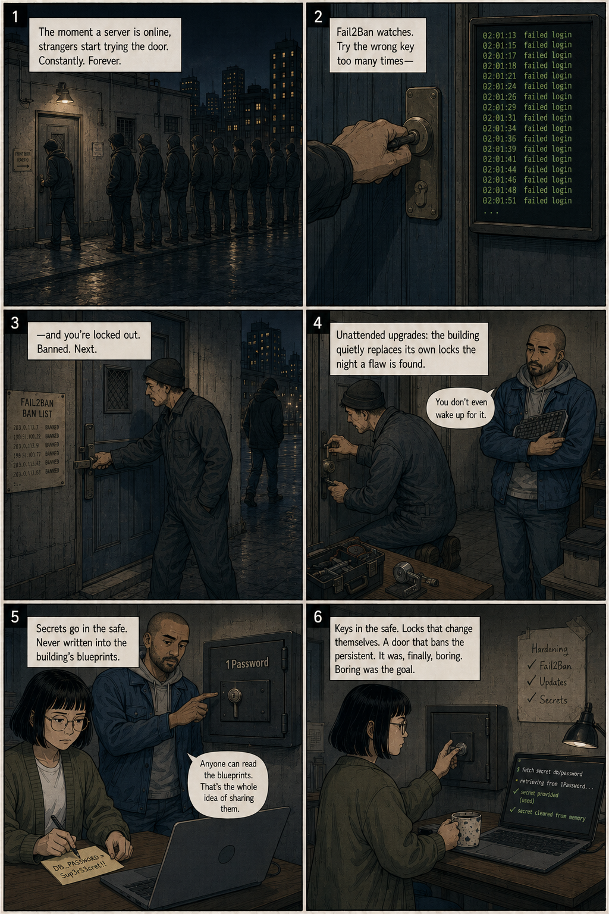
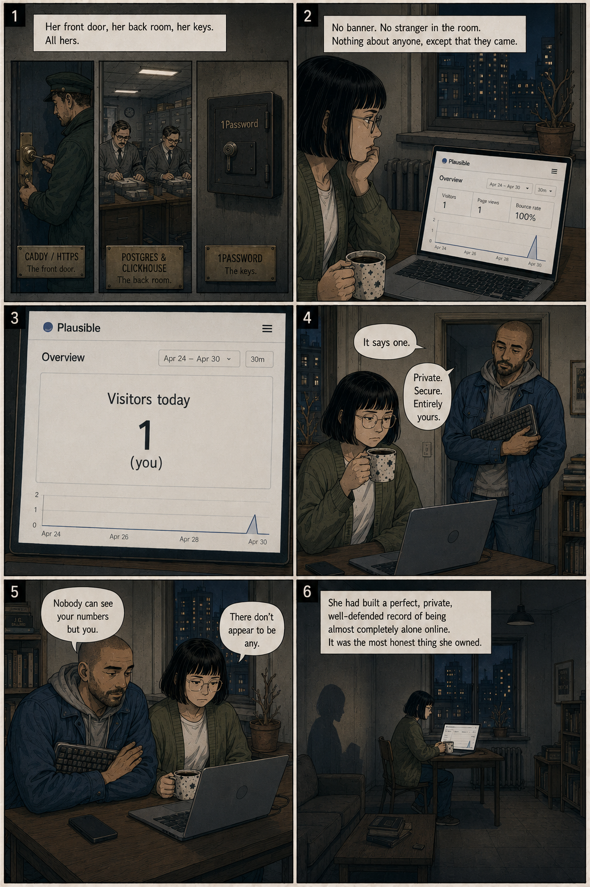

The problem. Every website wants to know who's visiting — and most pay for it with somebody else's privacy. "So Google watches my visitors," Dana notes, "so I can watch my visitors."
Page Two
Renting a VPS

The escape hatch. A VPS is a small computer you rent in a data center — yours alone, somewhere across town. Two cores, two gigabytes, the cheapest unit in the building. You move in Plausible, which counts visits with no cookies and nobody else in the room.
Page Three
Caddy & the Self-Installing Lock

The front door. Only one door faces the street. Caddy answers it, and on his own requests a certificate and fits the lock — that lock is HTTPS: the message is sealed in transit, and the lock proves the door is really yours. "Renews itself, too."
Page Four
The Back Room

The databases. Behind Caddy, two clerks do the record-keeping: Postgres keeps the boring, important paperwork; ClickHouse only counts, fast. They share a private hallway with no door to the street — the outside world can't even find them.
Page Five
Locks & Keys

Hardening. The moment a server is online, strangers try the door — forever. Fail2Ban bans the persistent; unattended upgrades change the locks the night a flaw is found; and secrets go in the 1Password safe, never written into the shared blueprints.
Page Six
The Last Page

The punchline. Her front door, her back room, her keys — all hers. The dashboard is honest, anonymous, and addressed to no one but its owner. It reads one. "Private. Secure. Entirely yours." A perfect, private, well-defended record of being almost completely alone online.
What's actually in the box
Unromantically, flat-pack furniture for a computer. Six parts — none charming, all yours.
CaddyThe doorman
Stands at the only entrance, fits its own deadbolt, and renews the HTTPS lock without being asked.
PlausibleThe dashboard
The room you actually log into — visitors, top pages, where they came from, nothing more.
PostgreSQLThe clerk
Keeps the dull paperwork: your account, your site settings.
ClickHouseThe faster clerk
Counts page views at a speed that feels slightly unfair to the other clerk.
The scriptsThe instructions
Assemble, harden, and start everything — the assembly manual that runs itself.
1PasswordThe wall safe
Holds the passwords. They're fetched at the last moment and never written into the files.
The floor plan
One way in. Everything valuable kept deliberately out of reach.
a visitor arrives at your site
│
▼
┌──────────────────────────┐
│ CADDY · the front door │ auto-HTTPS, no key ceremony
└──────────────────────────┘
│
▼
┌──────────────────────────┐
│ PLAUSIBLE · the desk │ the dashboard you log into
└──────────────────────────┘
│
┌──────┴──────┐
▼ ▼
POSTGRES CLICKHOUSE
(the settings) (the counting)
— internal network, no street access —
Why it's decent work
Quietly competent, in the four ways that tend to matter at 2 a.m.
Cheap on purposeTuned for the smallest, dullest server tier — 2 CPU, 2 GB of RAM — and given a little swap memory so it never keels over mid-install.
Locked by defaultInstalls its own security updates, turns away brute-force logins with Fail2Ban, and keeps the databases entirely off the public internet.
Discreet about secretsPasswords are pulled from 1Password at deploy time and never committed — the wall safe stays shut.
Nothing to be trapped byPlain Docker config and shell scripts. You can read every line. None of it belongs to anyone but you.